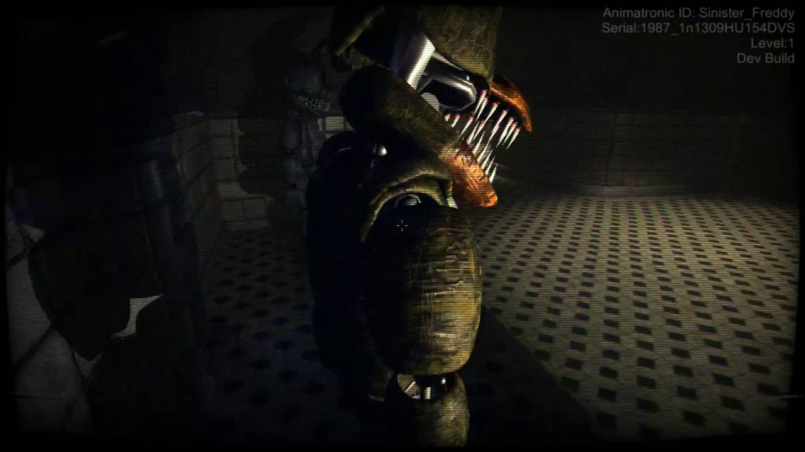

Abaixo do Fredbear and Friends Funland abandonado,
os horrores espreitam nas sombras.
Mangle foi lançado nos esgotos e você foi trancado lá com ele.
Enquanto navega por uma série de túneis e salas, você deve encontrar uma saída,
além de evitar os monstros que só têm uma agenda, para matá-lo.
Sinister Turmoil: Sewers é um pequeno recorte do que o jogo principal teria sido.
O objetivo é assustar os fãs, bem como satisfazê-los como um adeus final ao tão amado Sinister Turmoil.

Sinister Turmoil é um videogame de terror de sobrevivência de roaming gratuito
cancelado desenvolvido pela ANGUs GAMEs .
Ele foi feito anteriormente por UHQ_GAMES, mas o dono do jogo mudou ao longo do tempo.